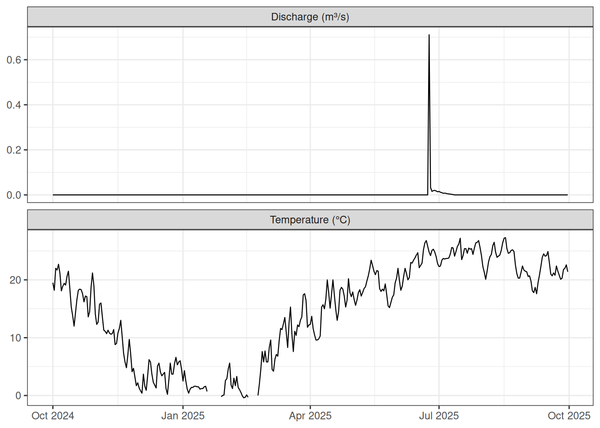
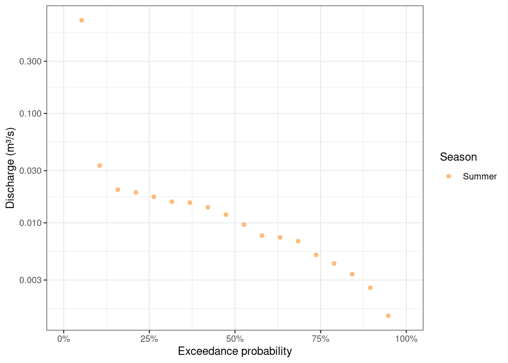
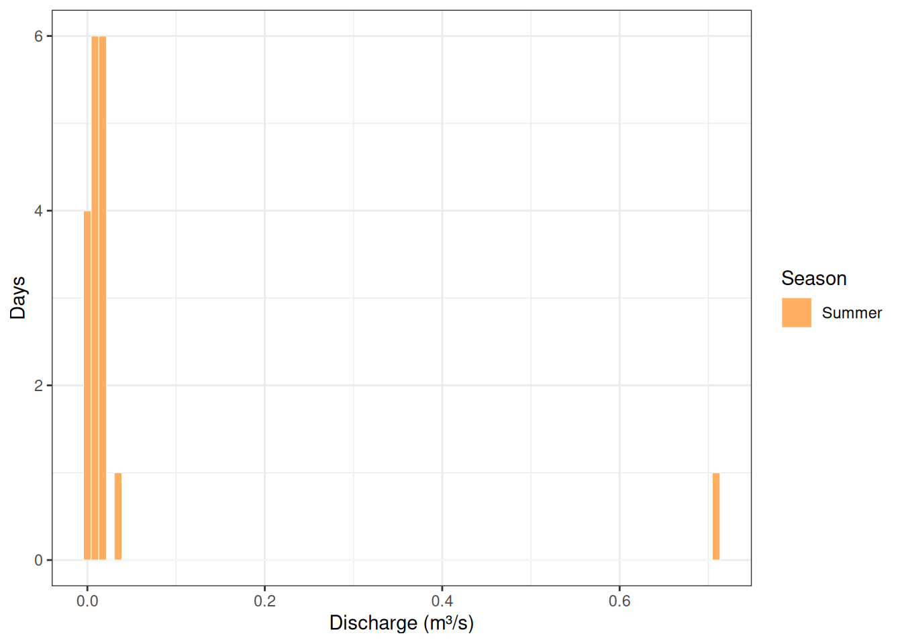

Introduction
This vignette demonstrates several preMetabolizer utilities for working with daily streamflow records. We use kings_discharge, a built-in dataset that contains daily USGS discharge and water temperature for Kings Creek (monitoring location USGS-06879650) at the Konza Prairie Biological Station in northeastern Kansas during water year 2025 (2024-10-01 through 2025-09-30).
Kings Creek is a well-studied tallgrass prairie stream with a highly episodic flow regime: many days record zero discharge, with brief but intense pulses following rainfall events.
Load and reshape the data
data(kings_discharge)
glimpse(kings_discharge)
#> Rows: 716
#> Columns: 5
#> $ monitoring_location_id <chr> "USGS-06879650", "USGS-06879650", "USGS-0687965…
#> $ time <date> 2024-10-01, 2024-10-01, 2024-10-02, 2024-10-02…
#> $ value <dbl> 0.0, 19.5, 0.0, 18.2, 0.0, 22.0, 0.0, 21.7, 0.0…
#> $ parameter_code <chr> "00060", "00010", "00060", "00010", "00060", "0…
#> $ qualifier <chr> "", "", "", "", "", "", "", "", "", "", "", "",…The data are in long format with one row per date × parameter combination. We pivot to wide format so each row represents a single day with discharge (00060, cfs) and water temperature (00010, °C) as separate columns.
kings <- kings_discharge |>
tidyr::pivot_wider(
id_cols = time,
names_from = parameter_code,
values_from = value
) |>
rename(discharge_cfs = `00060`, temp_C = `00010`)
glimpse(kings)
#> Rows: 365
#> Columns: 3
#> $ time <date> 2024-10-01, 2024-10-02, 2024-10-03, 2024-10-04, 2024-10…
#> $ discharge_cfs <dbl> 0, 0, 0, 0, 0, 0, 0, 0, 0, 0, 0, 0, 0, 0, 0, 0, 0, 0, 0,…
#> $ temp_C <dbl> 19.5, 18.2, 22.0, 21.7, 22.7, 21.1, 18.1, 18.9, 19.4, 19…Convert units
USGS reports discharge in cubic feet per second (cfs). convert_flow() converts between cfs, cubic meters per second (cms), and liters per second (lps). For comparison with international literature we add a cms column.
kings <- kings |>
mutate(discharge_cms = convert_flow(discharge_cfs, from = "cfs", to = "cms"))
summary(kings[, c("discharge_cfs", "discharge_cms")])
#> discharge_cfs discharge_cms
#> Min. : 0.00000 Min. :0.00000
#> 1st Qu.: 0.00000 1st Qu.:0.00000
#> Median : 0.00000 Median :0.00000
#> Mean : 0.08759 Mean :0.00248
#> 3rd Qu.: 0.00000 3rd Qu.:0.00000
#> Max. :25.10000 Max. :0.71075Add season
get_season() assigns a meteorological season (Winter, Spring, Summer, Fall) to each date, which is useful for stratified summaries and plots.
kings <- kings |>
mutate(season = factor(
get_season(time),
levels = c("Winter", "Spring", "Summer", "Fall")
))
count(kings, season)
#> # A tibble: 4 × 2
#> season n
#> <fct> <int>
#> 1 Winter 89
#> 2 Spring 93
#> 3 Summer 94
#> 4 Fall 89Time series overview
kings |>
tidyr::pivot_longer(
c(discharge_cms, temp_C),
names_to = "variable",
values_to = "value"
) |>
mutate(variable = recode(
variable,
discharge_cms = "Discharge (m³/s)",
temp_C = "Temperature (°C)"
)) |>
ggplot(aes(time, value)) +
geom_line(linewidth = 0.4) +
facet_wrap(~variable, ncol = 1, scales = "free_y") +
labs(x = NULL, y = NULL) +
theme_bw()
Flag anomalous values
flag_z() uses a moving-window robust Z-score to identify values that deviate unusually from their local neighborhood. Here we apply it to water temperature to check for sensor spikes or data-entry errors.
Flow duration curve
A flow duration curve (FDC) shows what fraction of time discharge equals or exceeds a given value. calc_exceedance_prob() implements the Weibull plotting-position formula. Setting rm.zero = TRUE excludes days with zero discharge from the ranking, so the curve reflects the non-zero portion of the flow regime.
kings <- kings |>
mutate(exceed_prob = calc_exceedance_prob(discharge_cms, rm.zero = TRUE))
zero_pct <- mean(kings$discharge_cms == 0, na.rm = TRUE) * 100
cat(sprintf("Days with zero discharge: %.1f%%\n", zero_pct))
#> Days with zero discharge: 95.1%
kings |>
filter(!is.na(exceed_prob)) |>
ggplot(aes(exceed_prob, discharge_cms, color = season)) +
geom_point(size = 1.5, alpha = 0.8) +
scale_x_continuous(
labels = \(x) paste0(round(x * 100), "%"),
limits = c(0, 1)
) +
scale_y_log10() +
scale_color_manual(values = c(
Winter = "#4575b4",
Spring = "#74add1",
Summer = "#fdae61",
Fall = "#d73027"
)) +
labs(
x = "Exceedance probability",
y = "Discharge (m³/s)",
color = "Season"
) +
theme_bw()
Discharge variability by season
calc_cv() computes the coefficient of variation (CV), a normalized measure of variability. A high CV indicates a flashy, episodic regime; a low CV indicates more stable baseflow conditions.
kings |>
filter(discharge_cms > 0) |>
group_by(season) |>
summarise(
n_days = n(),
mean_cms = mean(discharge_cms, na.rm = TRUE),
cv_pct = calc_cv(discharge_cms, na.rm = TRUE, as_percent = TRUE),
.groups = "drop"
)
#> # A tibble: 1 × 4
#> season n_days mean_cms cv_pct
#> <fct> <int> <dbl> <dbl>
#> 1 Summer 18 0.0503 328.Discharge histogram
calc_bin_width() suggests a histogram bin width using classical rules. The "fd" (Freedman-Diaconis) method is robust to outliers and works well for right-skewed flow data.
non_zero_q <- kings |> filter(discharge_cms > 0)
bw <- calc_bin_width(non_zero_q$discharge_cms, method = "fd")
ggplot(non_zero_q, aes(discharge_cms, fill = season)) +
geom_histogram(binwidth = bw, color = "white", linewidth = 0.2) +
scale_fill_manual(values = c(
Winter = "#4575b4",
Spring = "#74add1",
Summer = "#fdae61",
Fall = "#d73027"
)) +
labs(
x = "Discharge (m³/s)",
y = "Days",
fill = "Season"
) +
theme_bw()